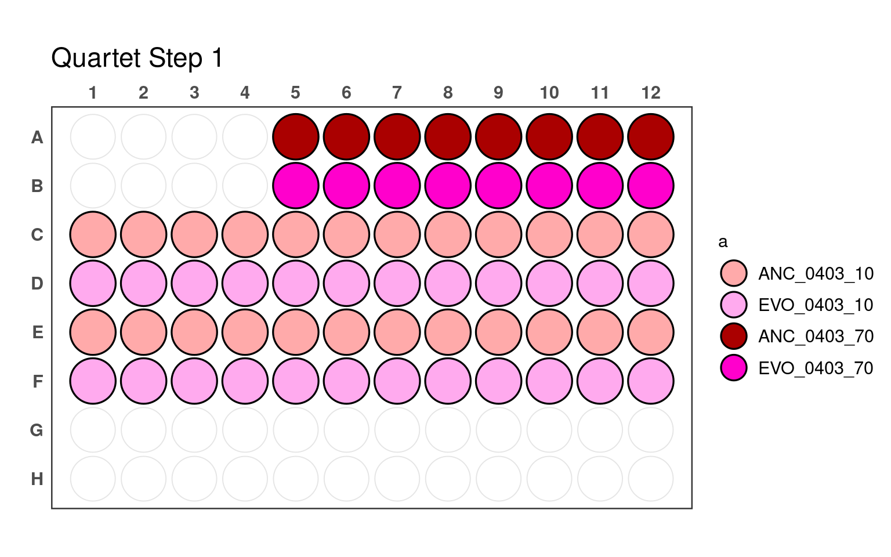

Designing four-species subcommunities
1 Setup
1.1 Libraries
1.2 Global variables
1.3 Functions and vars
Species color vector
my_colors <- c(
"ANC_0403_10" = "#ffaaaa", "ANC_0403_70" = "#aa0000", "ANC_0403_80" = "#aa0000", "ANC_0403_90" = "#aa0000",
"ANC_1287_10" = "#ffeeaa", "ANC_1287_70" = "#d4aa00", "ANC_1287_80" = "#d4aa00", "ANC_1287_90" = "#d4aa00",
"ANC_1896_10" = "#ccffaa", "ANC_1896_70" = "#44aa00", "ANC_1896_80" = "#44aa00", "ANC_1896_90" = "#44aa00",
"ANC_1977_10" = "#aaccff", "ANC_1977_70" = "#0055d4", "ANC_1977_80" = "#0055d4", "ANC_1977_90" = "#0055d4",
"EVO_0403_10" = "#ffaaee", "EVO_0403_70" = "#ff00cc", "EVO_0403_80" = "#ff00cc", "EVO_0403_90" = "#ff00cc",
"EVO_1287_10" = "#ffccaa", "EVO_1287_70" = "#ff6600", "EVO_1287_80" = "#ff6600", "EVO_1287_90" = "#ff6600",
"EVO_1896_10" = "#aaffee", "EVO_1896_70" = "#00ffcc", "EVO_1896_80" = "#00ffcc", "EVO_1896_90" = "#00ffcc",
"EVO_1977_10" = "#ccaaff", "EVO_1977_70" = "#7f2aff", "EVO_1977_80" = "#7f2aff", "EVO_1977_90" = "#7f2aff"
)For plotting plates
2 Construct quartet combinations
Get all possible quartets while excluding combinations of ANC/EVO of the same species
combos04 <- t(combn(c("ANC_0403", "EVO_0403", "ANC_1287", "EVO_1287", "ANC_1896", "EVO_1896", "ANC_1977", "EVO_1977"), 4))
combos04 <- tibble("a" = combos04[, 1], "b" = combos04[, 2], "c" = combos04[, 3], "d" = combos04[, 4])
combos04_filt <- combos04 %>%
filter(str_extract(a, "\\d+") != str_extract(b, "\\d+")) %>%
filter(str_extract(a, "\\d+") != str_extract(c, "\\d+")) %>%
filter(str_extract(a, "\\d+") != str_extract(d, "\\d+")) %>%
filter(str_extract(b, "\\d+") != str_extract(c, "\\d+")) %>%
filter(str_extract(b, "\\d+") != str_extract(d, "\\d+")) %>%
filter(str_extract(c, "\\d+") != str_extract(d, "\\d+"))Make plate layouts for the 4-species combos
combos04_filt_wells <- combos04_filt %>%
slice(rep(1:n(), each = 4)) %>%
mutate(a = paste(a, c(70, 10, 10, 10), sep = "_"),
b = paste(b, c(10, 70, 10, 10), sep = "_"),
c = paste(c, c(10, 10, 70, 10), sep = "_"),
d = paste(d, c(10, 10, 10, 70), sep = "_")) %>%
add_count(a, name = "a_count") %>%
add_count(b, name = "b_count") %>%
add_count(c, name = "c_count") %>%
add_count(d, name = "d_count") %>%
arrange(desc(a_count), a, desc(b_count), b, desc(c_count), c, desc(d_count), d) %>%
mutate(row = c(rep(LETTERS[c(5, 3, 6, 4)], each = 12), rep(LETTERS[1:2], each = 8))) %>%
group_by(row) %>%
mutate(col = if_else(!(row %in% c("A", "B")), str_pad(1:length(row), 2, pad = "0"), str_pad(1:length(row)+4, 2, pad = "0"))) %>%
ungroup() %>%
mutate(well = paste0(row, col))2.1 Format and save
combos04_filt_wells %>%
group_by(a, b, c, d) %>%
mutate(microcosm_id = cur_group_id()) %>%
ungroup() %>%
mutate(a_sp = paste0(str_split_i(a, "_", 2), stringr::str_extract(str_split_i(a, "_", 1), "^.{1}")),
b_sp = paste0(str_split_i(b, "_", 2), stringr::str_extract(str_split_i(b, "_", 1), "^.{1}")),
c_sp = paste0(str_split_i(c, "_", 2), stringr::str_extract(str_split_i(c, "_", 1), "^.{1}")),
d_sp = paste0(str_split_i(d, "_", 2), stringr::str_extract(str_split_i(d, "_", 1), "^.{1}")),
a_f = str_split_i(a, "_", 3),
b_f = str_split_i(b, "_", 3),
c_f = str_split_i(c, "_", 3),
d_f = str_split_i(d, "_", 3)) %>%
arrange(well) %>%
dplyr::select(microcosm_id, well, a, a_sp, a_f, b, b_sp, b_f, c, c_sp, c_f, d, d_sp, d_f) %>%
readr::write_tsv(here::here(data, "quartets_sample_composition_wide.tsv"))combos04_filt_wells %>%
group_by(a, b, c, d) %>%
mutate(microcosm_id = cur_group_id()) %>%
ungroup() %>%
dplyr::select(a:d, well, microcosm_id) %>%
tidyr::pivot_longer(c(-well, -microcosm_id)) %>%
tidyr::separate(value, c("evo_hist", "strainID", "target_f")) %>%
dplyr::mutate(evo_hist = stringr::str_to_lower(evo_hist),
strainID = paste0("HAMBI_", strainID),
target_f = as.numeric(target_f)/100,
n_species = 4) %>%
dplyr::select(-name) %>%
dplyr::relocate(microcosm_id, n_species) %>%
readr::write_tsv(here::here(data, "quartets_sample_composition_long.tsv"))3 Pipetting
Proceed in the order of steps below to construct master plates used to inoculate different conditions
3.1 First pipetting step

_70) or 10% (e.g., _10).
3.2 Second pipetting step

_70) or 10% (e.g., _10).
3.3 Third pipetting step

_70) or 10% (e.g., _10).
3.4 Fourth pipetting step

_70) or 10% (e.g., _10).